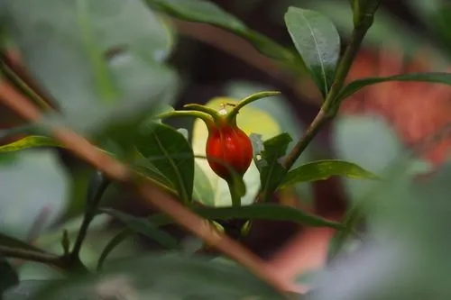

灌木与花木 · 植物界
栀子 Gardenia jasminoides

夏季开白色芳香花朵的常绿灌木，果实可提取黄色天然染料，也是中药“栀子”的来源，江南庭院常见。
- 分类
- 门被子植物门纲木兰纲目龙胆目科茜草科属栀子属
- 栖息环境
- 海拔 1000 米以下的山坡林缘、溪边与庭院，喜温暖湿润和酸性土
- 地理分布
- 原产中国长江流域及以南地区，江西、湖南、浙江等地常见
- 保护级别
- 暂无评估；中国未列入国家重点保护野生植物名录
物种志
栀子为常绿灌木，高可达 2 m，枝干灰色，小枝绿色；叶片对生或三叶轮生，革质，椭圆形至长圆状披针形，表面深绿光亮。花期 5–7 月，花单生于枝顶或叶腋，花冠高脚碟状，白色后转淡黄，花瓣 5–6 枚，芳香浓郁；果实卵形或椭圆形，具纵向棱，成熟时橙黄至橙红色，内含多数种子。
栀子原产中国长江流域及以南地区，喜温暖湿润、光照充足，也耐半阴，适宜疏松肥沃、排水良好的酸性土壤，在北方碱性水土中容易黄叶。它是江南常见的香花植物，夏季花开时香气可飘满庭院；果实是中药“栀子”，能清热泻火、凉血解毒，也是提取黄色天然染料的原料，古代常用于染制衣物与食品。叶与根亦可入药，木材细密可制器具。
形态与习性
- 株高可达 2 m，枝干灰色
- 花期5–7 月，花白色后转淡黄
- 果期9–11 月，果实橙黄色
- 光照喜光，也耐半阴
- 水分喜湿润，怕积水
- 土壤酸性壤土，pH 5.0–6.5
- 主要用途庭院香化、栀子入药、提取黄色染料
趣味知识
- 栀子花初开纯白，随后转为淡黄，一朵花的香气可以飘满整个庭院。
- 栀子果实是中药“栀子”，也是古代重要的黄色天然染料来源。
- 栀子在北方碱性水土中容易黄叶，栽培时需注意调节土壤酸碱度。
- 栀子果实的提取物可作为天然黄色素，用于食品与纺织品染色。